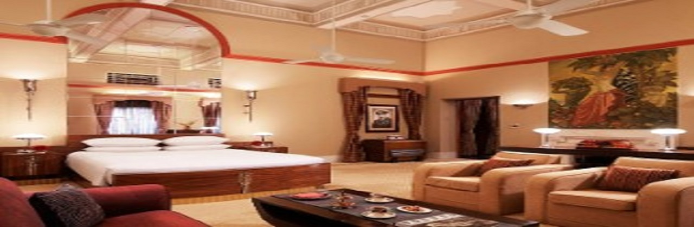
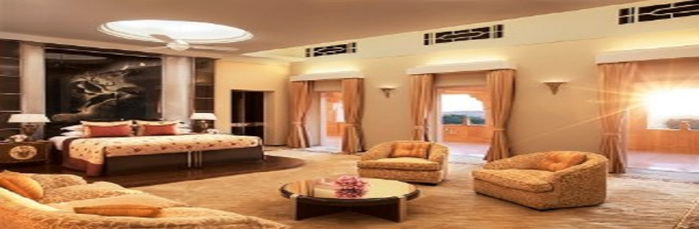

Umaid Bhawan Palace
Palace Room
"The Palace Rooms are exquisitely embellished with Art Deco interiors and equipped with modern amenities. A charming blend of original décor from princely times and the latest conveniences, they are truly unique"
1 Bedroom Suite
The uniquely themed Historical Suites, bedecked in maroon and green, were once the residences of visiting royalty. Each comes with a private sit out that offers stunning views of the lush lawns or courtyard.
Royal 1 Bedroom Suite
Decorated in the luxurious Art Deco style with mirror-finished terrazzo, each of the Royal Suites offers an expansive bedroom and sitting area. They overlook the sweeping Baradari Lawns and magnificent Mehrangarh Fort
welcome to our Hotel
Grand Palace Hotel in Jodhpur
Built between 1928 and 1943, Umaid Bhawan Palace is a magnificent piece of Rajasthan’s heritage, and a symbol of new Jodhpur. Home of the erstwhile Jodhpur royal family and currently the world’s sixth-largest private residence, the palace has one thing in common with the iconic Taj Mahal at Agra—the palm court marble used in its construction. Perched on Chittar Hill, the highest point in Jodhpur, Umaid Bhawan Palace inspires with exotic views of the historical Blue City, vast sand dunes, and intimidating Mehrangarh Fort. This heritage palace hotel in Jodhpur is conveniently located 20 minutes from the airport, close to the main shopping areas, and the Balsamand and Kalyana lakes. The last of the great palaces of India, the property houses a family museum, as well as the resplendent Umaid Bhawan Palace. Set amidst 26 acres of lush gardens, with dancing peacocks and a subterranean Zodiac Pool, our 5 star hotel in Jodhpur offers 70 utterly breathtaking Art Deco- style rooms and suites. Tantalise your taste buds at Risala with authentic Rajasthani and Indian cuisine. Discover an array of European and Mediterranean delicacies at Pillars, set in a lovely colonnaded veranda. Unwind at the Trophy Bar with its unique hunting-themed décor and vast selection of alcoholic beverages and cigars. Pamper yourself with rejuvenating signature treatments and therapies at the Jiva Grande Spa, or soothe your mind and body with yoga and meditation. Take a heritage walk and relive a fascinating bygone era brought to life through majestic monuments. Soak in the original architecture of a fascinating bygone era and discover the rich history of a palace that has enjoyed actual royal company—Maharani Badan Kanwar of Jodhpur having lived here. Stroll through the lush, landscaped Baradari Lawns, perfect for those who have always envisioned a fairy tale wedding. Come, experience luxury like the royals did.
For more information about our Hotel, Call +91 291-2510101 , +91 291- 6607000Maharaja Suite
Maharaja Suite faces the courtyard and has an extensive balcony. It once used to be the personal chamber of the erstwhile Maharaja of Jodhpur and still provides a glimpse of the bygone era. Besides an impressive bedroom, it has a grand sitting area, dining area and a concealed bar. It also includes an in-room spa and a steam room. The suite’s area is 344 sq. Mt
Maharani Suite
The most striking of the suites in the Palace, Maharani Suite, once used to be the personal chamber of the erstwhile Maharani of Jodhpur and reflects her personal style in its décor with the pink, black and chrome shades. This is the largest suite of the Palace and affords a view of imposing structure of the Mehrangarh fort and palace gardens from its stretched balcony. It comprises of an imposing bedroom and a living room, a magnificent dining room and a spacious bathroom with jacuzzi. It also includes an all-embracing walk-in wardrobe area, changing room, in-room spa, a steam room and a private kitchenette. The suite’s area is 372 sq. Mt.
Super Discount Offer

Member Exclusive Rate - Room Only
Book Direct and Save - Room Only, inclusive of basic WiFi up to 4 devices. Flexible cancellation. Applicable taxes are extra. Valid Membership Number to be provided at the time of reservation and will be verified at the time of check in. The hotel will cancel or amend the rate if member Details are not provided prior to check in
- Umaid Bhawan Palace, Jodhpur, Rajasthan , 342006, India
A LIVING HISTORY
THE LAST OF THE GRAND PALACES OF INDIA WITH ENDLESS STORIES WAITING TO BE TOLDIn our second issue of ‘Stories from the Taj’, we present enchanting stories of the last of the great palaces of India – Umaid Bhawan Palace, Jodhpur.
By samiksha rodke